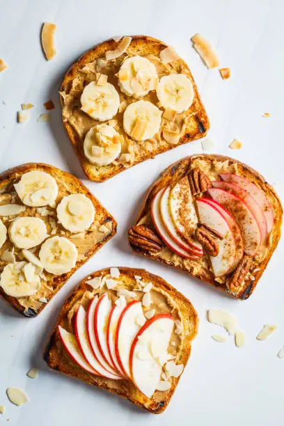

Peanut Butter on Toast Recipe

Description
A very simplistic recipe for making peanut butter on toast
Ingredients
- Slice Bread
- Peanut Butter
Steps
- Toast Bread: Toast your bread slice with a toaster oven to your own desire.
- Schmier' me!: Put a smear of peanut butter on your toasted bread.
- Get creative!: You can choose to put any topping that you would like on top like banana slices, blueberries, chocolate chips, etc. Or a combination of those! Or, just eat it raw if it rows your boat. Up to you!